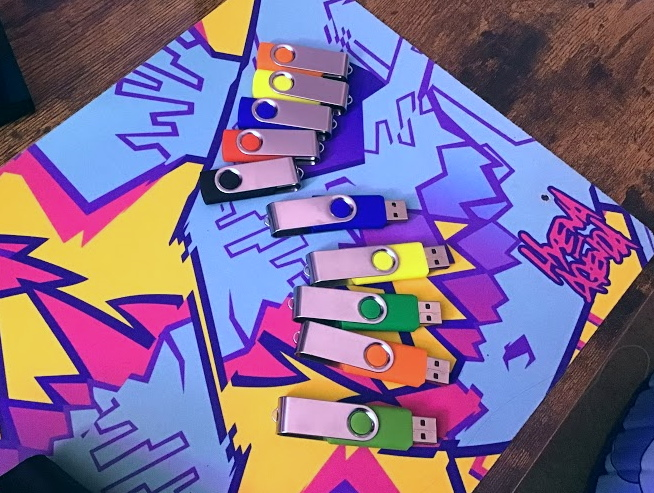

when i'm in my car, i usually like to listen to music on CDs. every car i've owned before my current one has had a CD player built in, so this was never an issue. however, the stock radio in my current vehicle, a 2019 model, does not have a CD player. i guess this is understandable as most people nowadays just play music from their phones or whatever, but it's also lacking one more type of input that's completely inexcusable - there's no aux jack! i guess ford just decided to follow in apple's courageous footsteps and remove the one and only standard, reliable, and immediate method of playing audio from one device to another. there's zero good reason to do this because the aux jack is far from obsolete, but i'll save that rant for another time. i still have a problem to solve though - what can i do to get around this issue and actually play music in my car?
swapping out the stock radio with an aftermarket one that's equipped with a CD player would be the best option, but sadly that's not possible. my car's radio mount is completely proprietary, so i'm just gonna have to work within the meager functionality present in the stock radio. it can use the following methods to play audio:
okay, i'll just rip all my CDs and load them onto a flash drive. the radio functions just like a big MP3 player, so when a drive is inserted, it'll index all the files on it and sort them into albums, artists, and genres. problem solved! plus, this should actually be a huge upgrade in convenience over using CDs!
there's one little catch though... when the car is moving at all, the radio immediately locks out the menu for selecting a different album or artist to play, leaving the currently selected album playing on repeat endlessly until i come to a complete stop. this means that when i'm on the highway, where i won't encounter a red light for an extended length of time, it's impossible to change what's playing - not even a passenger is allowed to do so. i can't just grab a new CD out of the center console and throw it in, so this is actually a massive downgrade compared to using CDs!
up until now, i've just been living with this issue for as long as i've had this car, until i visited the local thrift store earlier this week and saw something very interesting. in the electronics section, there was a tub full of dozens of tiny, cheap, generic flash drives for only 50 cents each!
seeing them sparked an extremely dumb idea: what if i grabbed a ton of these extremely cheap drives and loaded just one album onto each of them? that way when i want to switch what album is playing, all i have to do is plug in a different flash drive, bypassing the locked-out navigation menu entirely! i grabbed 10 of them (for only $5!) and started loading them up with my favorite albums, one per drive. they only have a capacity of 256MB, but that's enough for one album encoded as 320kbps (or 256kbps if necessary) MP3s.
this turned out to be success! my radio gracefully handles drives being hotswapped, even when the car is in motion. when a drive is unplugged, it just falls back to playing FM radio, then when a new drive is plugged in, all i have to do is press the 'source' button once and it immediately starts playing from the beginning of the new drive.
as surprisingly effective of a solution this is, i also want to be able to play minidiscs in my car from my MD walkman, so i'll still need to bodge in an aux jack somehow. i guess i could use a bluetooth transmitter, but every experience i've had with bluetooth audio has been abysmal, so i'm not exactly excited about that approach. maybe if i'm super lucky, my radio will be able to support USB ADCs? i guess i'll just have to experiment and find out.